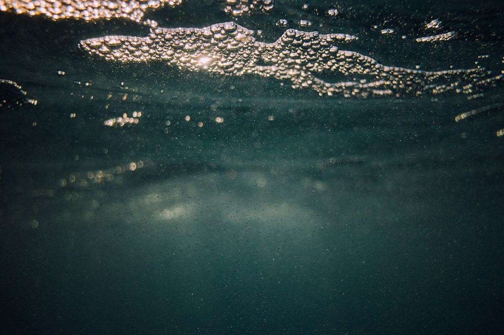
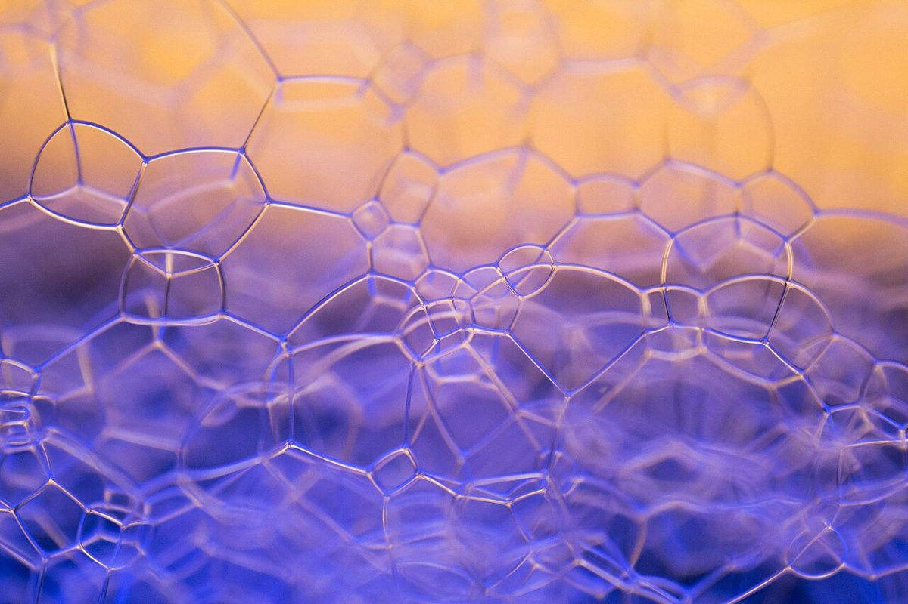
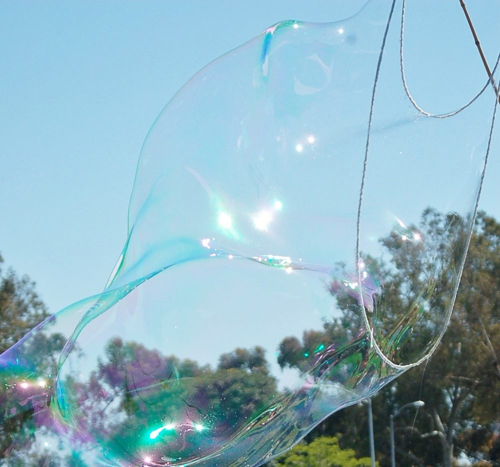
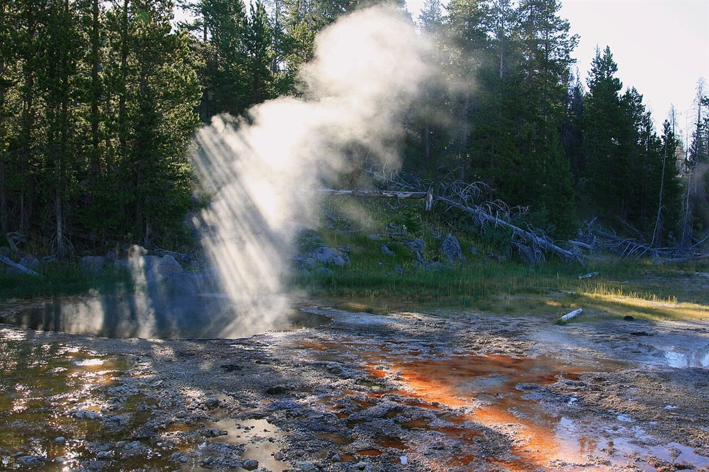
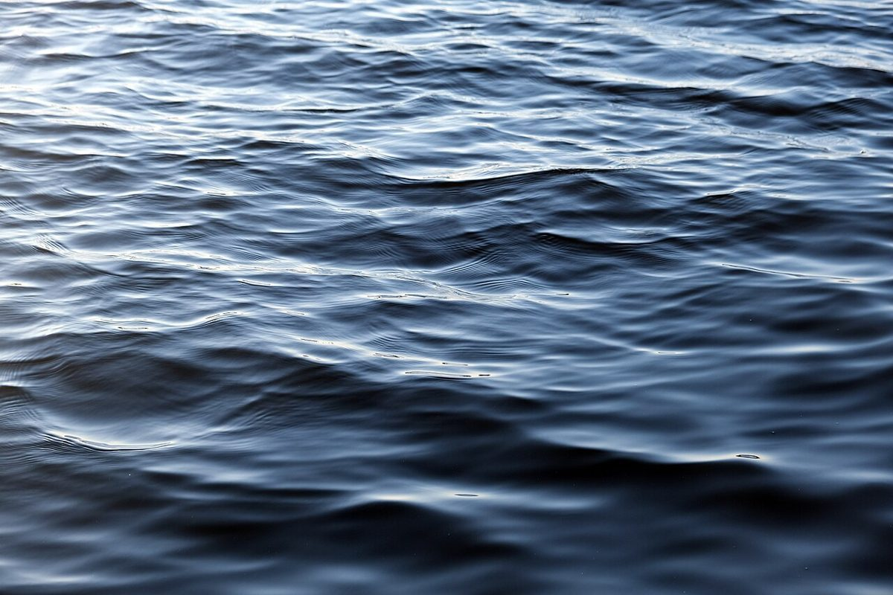

ぷかぷかまちライブラリーカフェ pukapuka




制作側の連想
「pukapuka」から、浮かぶものを集めてみた
このページのテーマは「ぷかぷか背表紙」です。屋号の「pukapuka」の響きから、制作側が「ぷかぷか」と水面や空に浮かぶ様子を連想し、屋号の「ライブラリー」から本の背表紙を連想しました。上のメニューが本棚の背表紙のように並び、今いるページの背表紙だけがぷかっと浮いているのは、そのためです。お店の理念や名前の由来とは無関係の、制作側の連想です。
「まちライブラリー」にあたる本の取り組みがお店で行われているかどうかは、制作側では確認できていません。このサイトでは、本の貸し借りなどの提供内容については書いていません。
ぷかぷか見本
浮かぶものの、見本帖。
写真はお店や町のものではありません。「浮かぶ」というテーマで選んだ、国外・撮影地不明のフリー素材です。
- 舟

国外のイメージ(イタリア) - 湯気

国外のイメージ(米国) - うねり

国外のイメージ(フィンランド) - 水平線

国外のイメージ(タークス・カイコス諸島)
奥付
お店のこと(確認できたものだけ)
| 屋号 | まちライブラリーカフェpukapuka |
|---|---|
| 所在地 | 〒699-2511 島根県大田市温泉津町小浜ロ59 |
| 電話 | なし |
| 営業時間 | 準備中 |
| 定休日 | 準備中 |
| ご予約 | 準備中 |
| 駐車場 | 準備中 |
| SNS | Instagram @pukapuka_yunotsu |